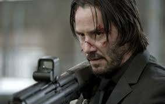
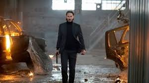
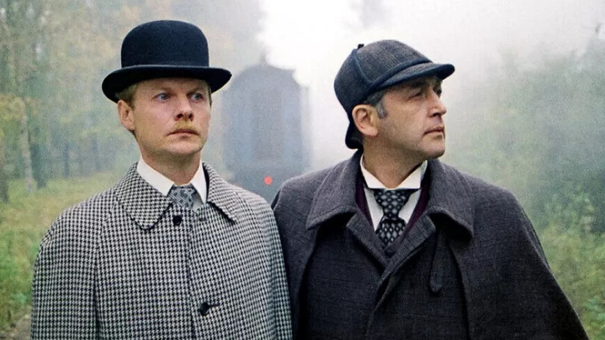
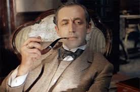
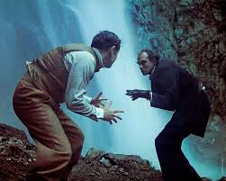
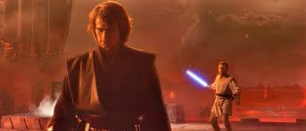
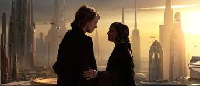
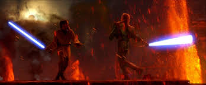

Мои любимые фильмы
Джон Уик 1
Джон Уик — бывший наемный убийца — ведет размеренную жизнь, когда преступник крадет его любимый Mustang 1969 года и попутно убивает собаку Дейзи, единственное живое напоминание об умершей жене. Жажда мести пробуждает в нем, казалось, утерянную хватку….



Информация о фильме
| Год |
2014 |
| Страна |
США, Китай |
| Жанр |
Боевик, Триллер, Криминал |
| Режиссер |
Чад Стахелски, Дэвид Литч |
Шерлок Холмс И Доктор Ваттсон
«Ше́рлок Холмс и до́ктор Ватсон» — первая часть советской серии телефильмов по мотивам рассказов Артура Конан Дойля о Шерлоке Холмсе



Информация о фильме
| Год |
1980 |
| Страна |
СССР |
| Жанр |
Детектив/Триллер |
| Режиссер |
Игорь Масленников |
Звёздные войны. Эпизод III: Месть ситхов
Действие фильма происходит через три года после начала Войн клонов, как это показано в Атаке клонов. Джедаи рассредоточены по всей галактике и ведут полномасштабную войну против сепаратистов.



Информация о фильме
| Год |
2005 |
| Страна |
США |
| Жанр |
эпическая космическая опера |
| Режиссер |
Джордж Лукас |